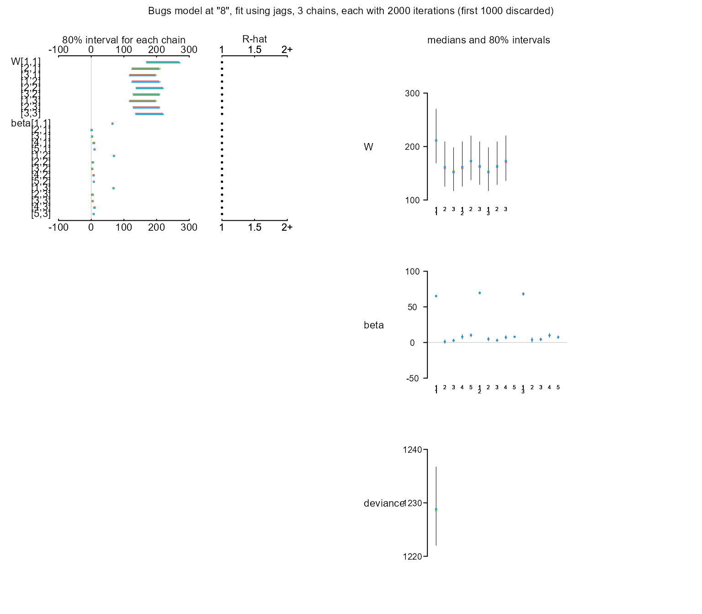
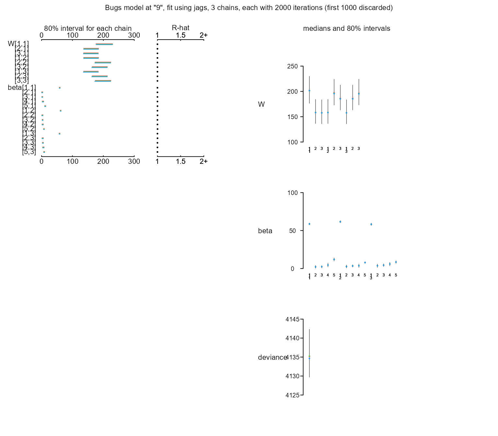

Examples markdown
Lampis Tzai
2023-06-26
examples_markdown.RmdThis is an R Markdown document with four examples for the library “BayesMuCoSoT”. These examples are going to help you to fully understand the library. It is recommended to read first the theory here. The examples contains:
- Iris same source comparisons between species
- Iris different source comparisons between species
- Simulated dataset different source comparisons
- Kaggle dataset Students Performance in Exams
Hence, the hypotheses we are testing are the following:
\[H_p: The\;unknown\;and\;the\;known\;data\; come \;from\; the\; same \;source\] \[H_d: The\;unknown\;and\;the\;known\;data\; come \;from\; different \;sources\]
For the all the examples we split the data ourselves. In real case scenarios we do not know the source of questioned materials.
Library import and install
#install.packages("devtools")
#devtools::install_github('lampis-tzai/BayesMuCoSoT')
library(BayesMuCoSoT)Iris same source comparison
all_data = iris[iris$Species=='setosa',]
questioned_data = all_data[1:(nrow(all_data)/2),]
known_data = all_data[(nrow(all_data)/2+1):nrow(all_data),]
background_data = iris[iris$Species!='setosa',]
background_data_id = 'Species'
y = names(questioned_data)[1:4]
BayesMuCoSoT_fit(y, x=NA, questioned_data, known_data, background_data,background_data_id)
#> [1] "Prior elicitation finished"
#> [1] "Sampling from posterior considering common modeling per source"
#> [1] "Sampling from posterior considering different modeling per source"
#> [1] "Calculating Bayes factor"
#> [1] 20.36982- We have extreme evidence to support that are from the same species.
Iris different source comparison
set.seed(10)
## create questioned data
questioned_data = iris[iris$Species=='versicolor',]
split_ind <- sample(seq_len(nrow(questioned_data)), size = floor(0.5 * nrow(questioned_data)))
background_data1 = questioned_data[-split_ind,]
questioned_data = questioned_data[split_ind,]
## create known data
known_data = iris[iris$Species=='virginica',]
split_ind <- sample(seq_len(nrow(known_data)), size = floor(0.5 * nrow(known_data)))
background_data2 = known_data[-split_ind,]
known_data = known_data[split_ind,]
## create background data
background_data = rbind(iris[iris$Species=='setosa',],
background_data1,
background_data2)
## Test
background_data_id = 'Species'
y = names(questioned_data)[1:4]
BayesMuCoSoT_fit(y,x=NA,questioned_data,known_data,
background_data,background_data_id)
#> [1] "Prior elicitation finished"
#> [1] "Sampling from posterior considering common modeling per source"
#> [1] "Sampling from posterior considering different modeling per source"
#> [1] "Calculating Bayes factor"
#> [1] -29.17773- We have extreme evidence to support that are from different species.
Simulated dataset different source comparisons
library(LaplacesDemon) #for sampling for multivariate normal
## create questioned data
questioned_data = as.data.frame(rmvn(10,rep(0,2),array(c(2,0.5,0.5,2),dim = c(2,2))))
## create known data
known_data = as.data.frame(rmvn(8,rep(2,2),array(c(2,0.5,0.5,2),dim = c(2,2))))
## create background data
background_data = as.data.frame(rbind(rmvn(10,rep(0.5,2),array(c(1,0.2,0.2,2),dim = c(2,2))),
rmvn(10,rep(1.5,2),array(c(6,0.3,0.3,4),dim = c(2,2))),
rmvn(10,rep(3,2),array(c(3,0.8,0.8,3),dim = c(2,2)))))
background_data['id'] = rep(1:3,each=10)
## Test
background_data_id = 'id'
y = names(questioned_data)[1:2]
logBF = BayesMuCoSoT_fit(y,x=NA,questioned_data,known_data,background_data,background_data_id)
#> [1] "Prior elicitation finished"
#> [1] "Sampling from posterior considering common modeling per source"
#> [1] "Sampling from posterior considering different modeling per source"
#> [1] "Calculating Bayes factor"
exp(logBF)
#> [1] 0.4737203- Bare mention for supporting that are from different sources.
Kaggle dataset Students Performance in Exams
students_df = read.csv('StudentsPerformance.csv')
head(students_df)
#> gender race.ethnicity parental.level.of.education lunch
#> 1 female group B bachelor's degree standard
#> 2 female group C some college standard
#> 3 female group B master's degree standard
#> 4 male group A associate's degree free/reduced
#> 5 male group C some college standard
#> 6 female group B associate's degree standard
#> test.preparation.course math.score reading.score writing.score
#> 1 none 72 72 74
#> 2 completed 69 90 88
#> 3 none 90 95 93
#> 4 none 47 57 44
#> 5 none 76 78 75
#> 6 none 71 83 78Same parental education level test
all_data = students_df[students_df$parental.level.of.education=="master's degree",]
questioned_data = all_data[1:(nrow(all_data)/2),]
known_data = all_data[(nrow(all_data)/2+1):nrow(all_data),]
background_data = students_df[students_df$parental.level.of.education!="master's degree",]
background_data_id = 'parental.level.of.education'
y = names(students_df)[6:8]
BayesMuCoSoT_fit(y, x=NA, questioned_data, known_data, background_data,background_data_id)
#> [1] "Prior elicitation finished"
#> [1] "Sampling from posterior considering common modeling per source"
#> [1] "Sampling from posterior considering different modeling per source"
#> [1] "Calculating Bayes factor"
#> [1] 9.452445- We have extreme evidence to support that are from the same parental education level.
Different parental education level test
questioned_data = students_df[students_df$parental.level.of.education=="master's degree",]
known_data = students_df[students_df$parental.level.of.education=="high school",]
background_data = students_df[!students_df$parental.level.of.education %in% c("master's degree","high school"),]
background_data_id = 'parental.level.of.education'
y = names(students_df)[6:8]
BayesMuCoSoT_fit(y, x=NA, questioned_data, known_data, background_data,background_data_id)
#> [1] "Prior elicitation finished"
#> [1] "Sampling from posterior considering common modeling per source"
#> [1] "Sampling from posterior considering different modeling per source"
#> [1] "Calculating Bayes factor"
#> [1] -7.087001- We have extreme evidence to support that are from different parental education level.
Different parental education level test with predictors
#install.packages("fastDummies")
library(fastDummies)
# Create dummy variable
students_df <- dummy_cols(students_df,
select_columns = c("race.ethnicity"))
students_df['race.ethnicity_group A'] = 1
questioned_data = students_df[students_df$parental.level.of.education=="master's degree",]
known_data = students_df[students_df$parental.level.of.education=="high school",]
background_data = students_df[!students_df$parental.level.of.education %in% c("master's degree",
"high school"),]
background_data_id = 'parental.level.of.education'
y = names(students_df)[6:8]
x = names(students_df)[9:13]
BayesMuCoSoT_fit(y, x, questioned_data, known_data, background_data,background_data_id)
#> [1] "Prior elicitation finished"
#> [1] "Sampling from posterior considering common modeling per source"
#> [1] "Sampling from posterior considering different modeling per source"
#> [1] "Calculating Bayes factor"
#> [1] -4.804203- We have very strong evidence to support that are from different parental education level.
Return JAGS output
output = BayesMuCoSoT_fit(y, x, questioned_data, known_data,
background_data,background_data_id,
return_jags_outputs = TRUE)
#> [1] "Prior elicitation finished"
#> [1] "Sampling from posterior considering common modeling per source"
#> [1] "Sampling from posterior considering different modeling per source"
#> [1] "Calculating Bayes factor"
print(output$logbf)
#> [1] -4.765337
print(round(output$posterior_common_model$BUGSoutput$summary[,1:7],2))
#> mean sd 2.5% 25% 50% 75% 97.5%
#> W[1,1] 213.10 19.02 178.93 199.98 211.86 224.76 253.69
#> W[2,1] 172.54 17.09 141.01 160.92 171.56 183.45 209.45
#> W[3,1] 172.46 17.19 140.77 161.00 171.46 183.64 208.82
#> W[1,2] 172.54 17.09 141.01 160.92 171.56 183.45 209.45
#> W[2,2] 210.69 18.59 177.99 197.50 209.68 222.17 250.79
#> W[3,2] 203.85 18.47 171.84 190.89 202.94 215.46 243.11
#> W[1,3] 172.46 17.19 140.77 161.00 171.46 183.64 208.82
#> W[2,3] 203.85 18.47 171.84 190.89 202.94 215.46 243.11
#> W[3,3] 218.50 19.32 185.01 204.79 217.44 230.83 259.25
#> beta[1,1] 60.47 0.95 58.59 59.83 60.48 61.08 62.33
#> beta[2,1] 1.35 1.43 -1.42 0.37 1.35 2.34 4.10
#> beta[3,1] 2.03 1.16 -0.28 1.25 2.07 2.83 4.23
#> beta[4,1] 6.12 1.73 2.74 4.95 6.11 7.30 9.55
#> beta[5,1] 11.04 1.45 8.21 10.06 11.02 12.00 13.86
#> beta[1,2] 63.66 1.06 61.58 62.97 63.64 64.36 65.79
#> beta[2,2] 2.51 1.56 -0.52 1.45 2.50 3.60 5.56
#> beta[3,2] 2.92 1.18 0.56 2.12 2.91 3.69 5.26
#> beta[4,2] 5.45 1.62 2.28 4.37 5.44 6.53 8.65
#> beta[5,2] 7.97 0.93 6.18 7.33 7.97 8.61 9.80
#> beta[1,3] 60.91 1.23 58.48 60.10 60.91 61.70 63.39
#> beta[2,3] 2.83 1.73 -0.62 1.68 2.83 4.03 6.09
#> beta[3,3] 3.75 1.36 1.03 2.84 3.77 4.65 6.34
#> beta[4,3] 7.91 1.76 4.41 6.72 7.92 9.10 11.34
#> beta[5,3] 8.19 1.26 5.68 7.35 8.17 9.03 10.67
#> deviance 5405.66 5.47 5396.58 5401.80 5404.95 5408.90 5418.17
print(round(output$posterior_questioned_data_model$BUGSoutput$summary[,1:7],2))
#> mean sd 2.5% 25% 50% 75% 97.5%
#> W[1,1] 216.11 40.83 151.09 187.40 211.12 237.58 312.94
#> W[2,1] 164.81 34.34 108.46 140.87 160.84 183.73 246.63
#> W[3,1] 155.96 33.32 101.28 132.44 152.55 174.99 235.73
#> W[1,2] 164.81 34.34 108.46 140.87 160.84 183.73 246.63
#> W[2,2] 176.44 33.57 122.89 152.10 172.63 196.14 255.57
#> W[3,2] 166.43 32.50 115.36 142.96 162.80 185.26 241.62
#> W[1,3] 155.96 33.32 101.28 132.44 152.55 174.99 235.73
#> W[2,3] 166.43 32.50 115.36 142.96 162.80 185.26 241.62
#> W[3,3] 175.72 33.33 121.76 151.67 172.21 194.68 251.98
#> beta[1,1] 65.12 1.32 62.50 64.23 65.15 66.03 67.66
#> beta[2,1] 1.19 1.97 -2.77 -0.12 1.24 2.53 4.90
#> beta[3,1] 2.82 1.56 -0.17 1.76 2.78 3.88 5.94
#> beta[4,1] 7.94 2.37 3.36 6.36 7.92 9.50 12.74
#> beta[5,1] 10.13 1.80 6.53 8.93 10.19 11.37 13.64
#> beta[1,2] 69.55 1.38 66.79 68.61 69.56 70.52 72.12
#> beta[2,2] 4.75 1.99 0.75 3.44 4.77 6.07 8.63
#> beta[3,2] 3.12 1.49 0.15 2.11 3.09 4.13 6.04
#> beta[4,2] 7.25 1.99 3.39 5.90 7.26 8.63 11.11
#> beta[5,2] 7.97 0.97 6.02 7.31 8.00 8.63 9.80
#> beta[1,3] 68.20 1.68 64.87 67.06 68.21 69.38 71.29
#> beta[2,3] 3.70 2.45 -1.13 2.08 3.73 5.37 8.48
#> beta[3,3] 4.38 1.68 1.09 3.25 4.36 5.50 7.63
#> beta[4,3] 9.96 2.23 5.62 8.45 9.97 11.52 14.29
#> beta[5,3] 7.44 1.60 4.25 6.39 7.46 8.52 10.60
#> deviance 1229.17 5.82 1219.25 1225.17 1228.68 1232.66 1241.84
print(round(output$posterior_known_data_model$BUGSoutput$summary[,1:7],2))
#> mean sd 2.5% 25% 50% 75% 97.5%
#> W[1,1] 202.66 21.36 165.47 187.45 201.54 216.18 250.27
#> W[2,1] 159.72 18.73 126.66 146.67 158.36 171.38 200.25
#> W[3,1] 158.87 18.69 125.67 145.75 157.69 169.94 199.25
#> W[1,2] 159.72 18.73 126.66 146.67 158.36 171.38 200.25
#> W[2,2] 197.61 20.08 162.12 183.68 196.43 210.29 240.41
#> W[3,2] 187.00 19.51 152.35 173.15 185.83 199.00 227.93
#> W[1,3] 158.87 18.69 125.67 145.75 157.69 169.94 199.25
#> W[2,3] 187.00 19.51 152.35 173.15 185.83 199.00 227.93
#> W[3,3] 197.35 19.91 161.90 182.91 195.88 210.13 240.07
#> beta[1,1] 58.71 0.99 56.77 58.03 58.70 59.38 60.64
#> beta[2,1] 2.18 1.44 -0.60 1.20 2.17 3.15 4.98
#> beta[3,1] 2.37 1.26 -0.25 1.57 2.38 3.22 4.86
#> beta[4,1] 4.59 1.95 0.87 3.26 4.56 5.90 8.50
#> beta[5,1] 11.93 1.55 8.90 10.93 11.93 12.92 15.00
#> beta[1,2] 61.64 1.09 59.54 60.89 61.62 62.42 63.75
#> beta[2,2] 2.65 1.55 -0.44 1.67 2.66 3.70 5.67
#> beta[3,2] 3.41 1.23 0.96 2.60 3.42 4.24 5.79
#> beta[4,2] 3.70 1.75 0.36 2.51 3.71 4.92 7.08
#> beta[5,2] 7.84 0.94 6.03 7.22 7.84 8.47 9.69
#> beta[1,3] 58.26 1.26 55.82 57.43 58.24 59.12 60.75
#> beta[2,3] 3.65 1.73 0.12 2.51 3.69 4.76 7.04
#> beta[3,3] 4.39 1.40 1.60 3.45 4.39 5.30 7.15
#> beta[4,3] 5.89 1.91 2.14 4.56 5.89 7.22 9.52
#> beta[5,3] 8.47 1.33 5.82 7.58 8.45 9.37 11.09
#> deviance 4135.67 5.08 4127.44 4132.05 4134.99 4138.66 4147.31Finally you can plot the jags outputs
plot(output$posterior_questioned_data_model)
plot(output$posterior_known_data_model)